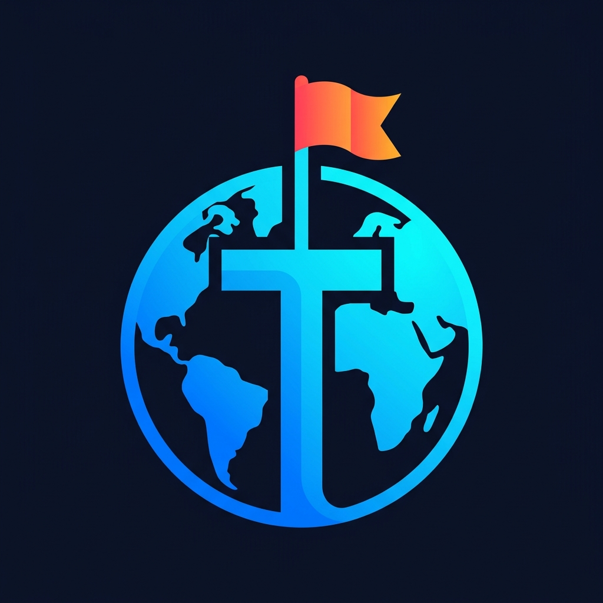
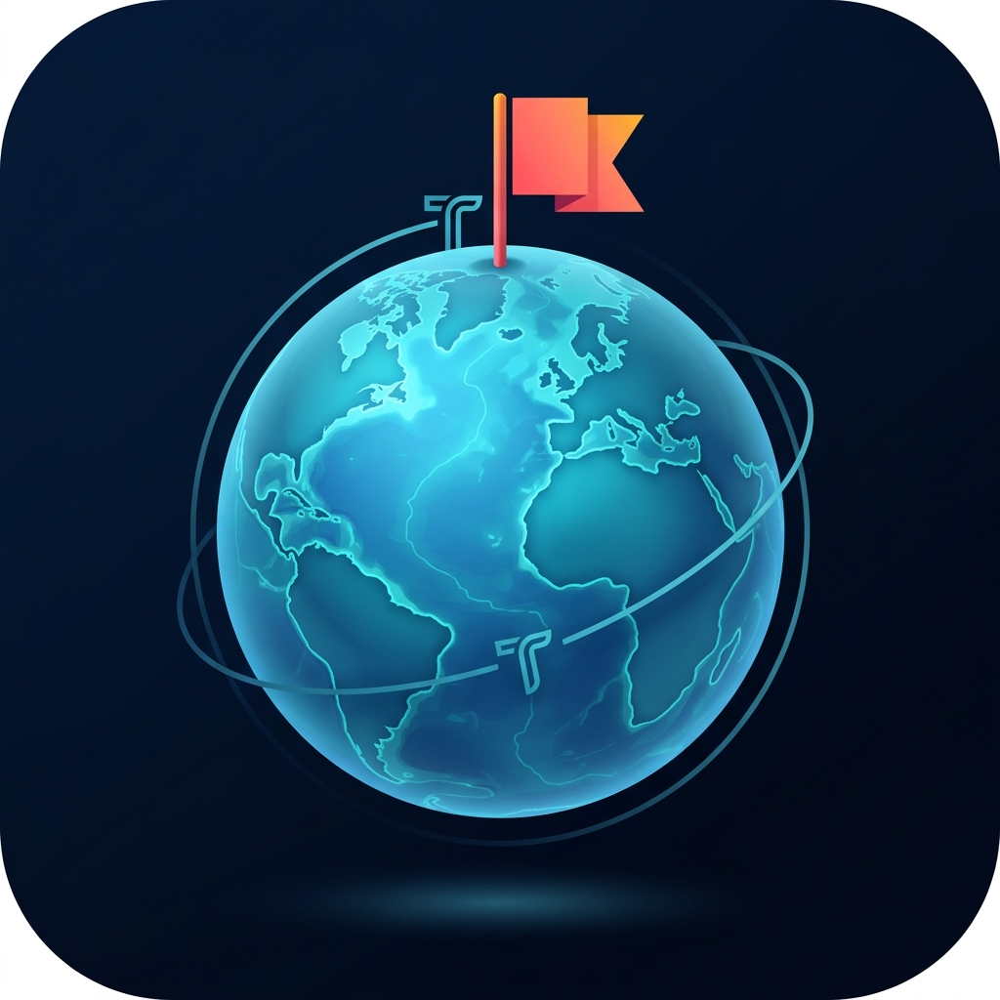
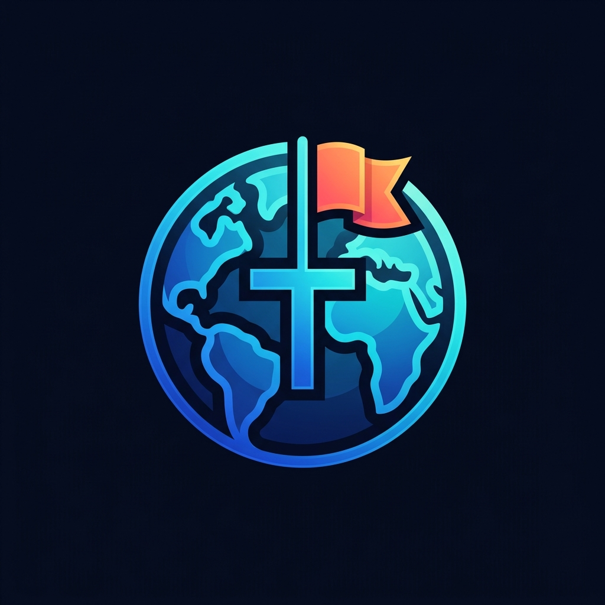
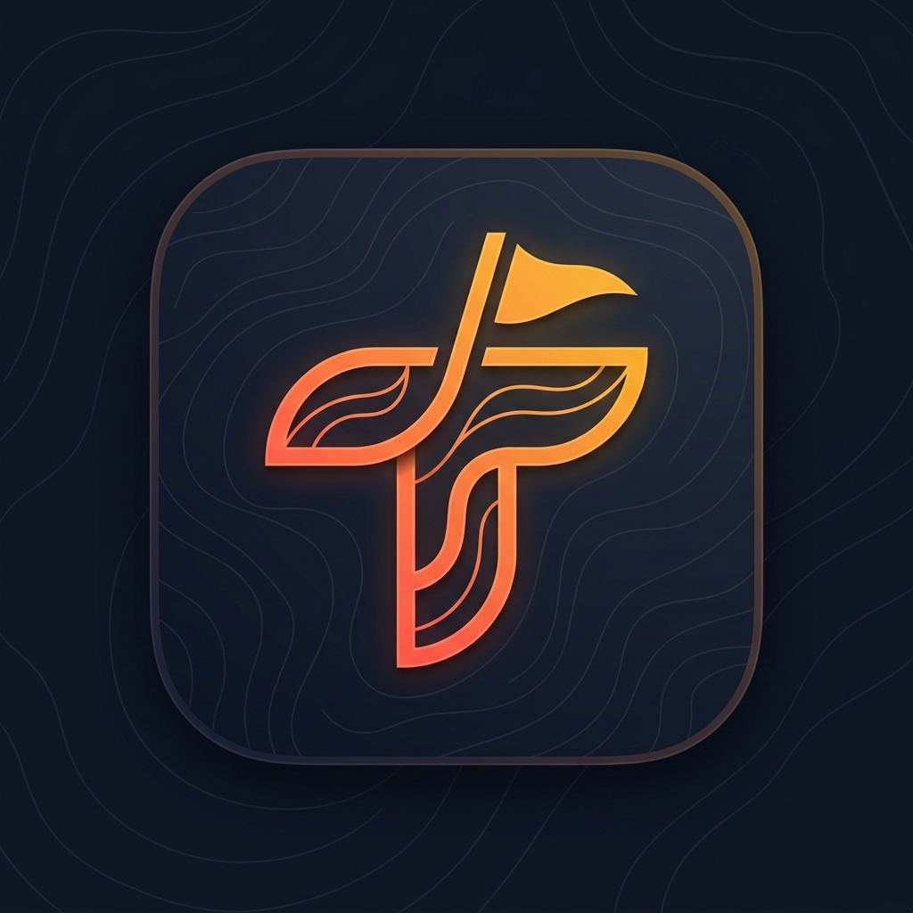
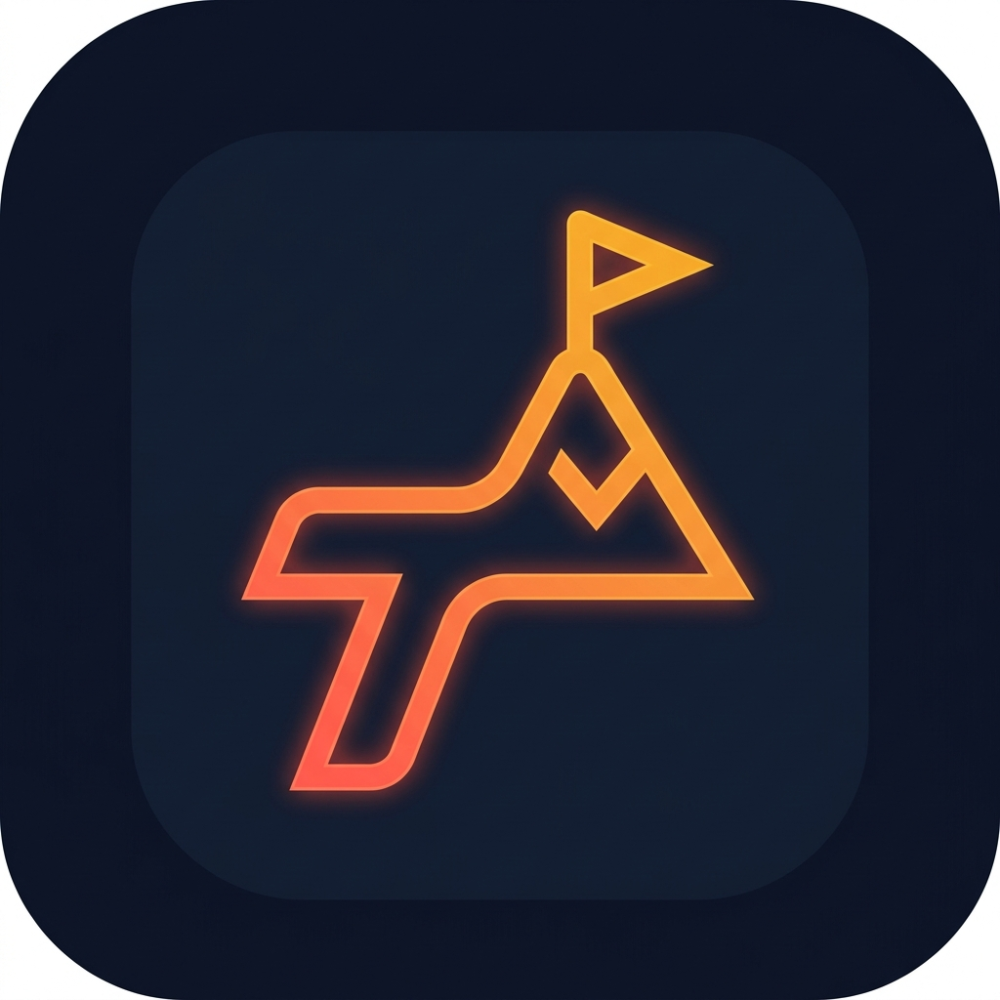
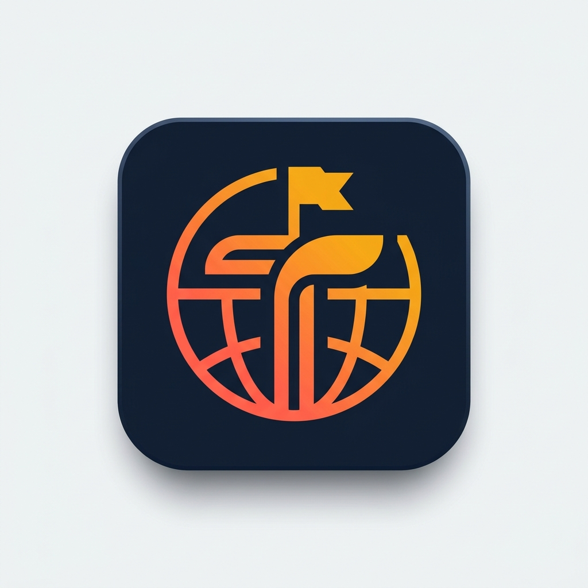

Explore the generated logo mark concepts for the Teritory social travel app.

Stylized 'T' flagpole integrated into a luminous cyan/azure ocean globe with hoisted summit flag.
Recommended App Icon
3D glowing ocean sphere with cyan coastlines, orbital coordinate curves, and staked discovery pin.
Premium 3D
Clean geometric silhouette where the letter 'T' forms the flagpole over a sapphire planet.
Minimal VectorEarth globe with glowing turquoise orbital rings and an elevated flag marker.
Orbital Concept
Emblem fusing stylized 'T' with elevation topo curves and an upward staked flag in sunset coral and gold.
Sunset Topo
Dynamic ribbon emblem uniting 'T' geometry with a mountain ridge and staked summit flag.
Summit Ridge
Minimalist vector icon combining coordinate crosshairs, flag mast, and geometric symmetry.
Geometric Flag